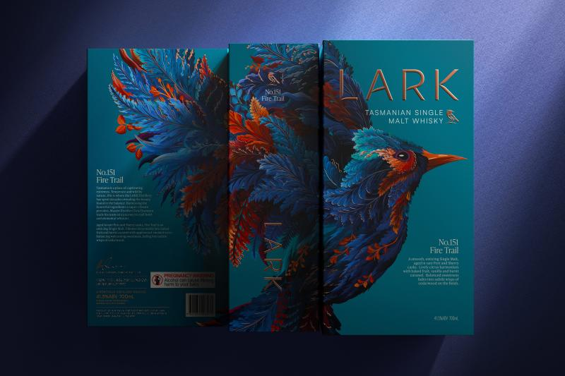
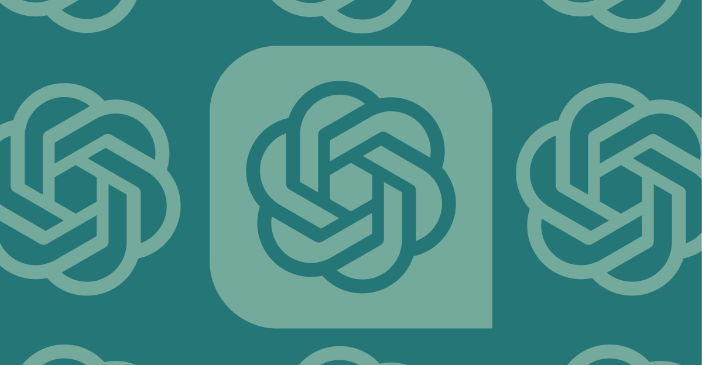
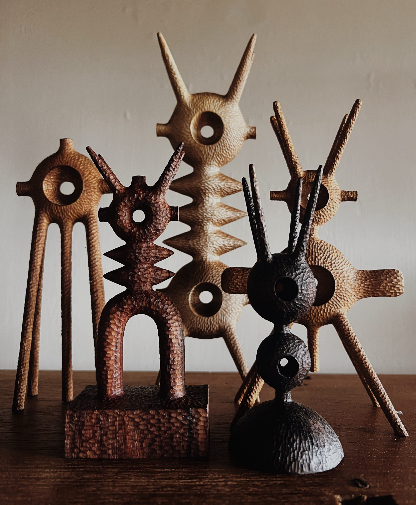

曼彻斯特工作室 LOVE 为塔斯马尼亚威士忌品牌 LARK 做的品牌重塑，完全抛弃了传统威士忌的「深色木纹+衬线体」套路。新标志以塔斯马尼亚岛轮廓为原型，演化为一道流动的烫金弧线；瓶身采用不对称切割，灵感来自岛上侏罗纪玄武岩柱。整套视觉避开了苏格兰威士忌的沉稳叙事，转而用「神秘岛屿」的轻逸感，为亚洲和欧洲高端市场打开了一个全新的烈酒美学品类。

OpenAI 正式向 Business 和 Enterprise 用户开放「Workspace Agent」——可以在云端自主执行任务的 AI 代理。与之前的 GPTs 不同，Workspace Agent 不是聊天机器人，而是工作流执行者：它可以从网页搜集产品反馈，整理后在 Slack 发报告，再到 Gmail 里草拟跟进行邮件。每个 Agent 可在团队内共享，一次构建、持续迭代。这标志着 AI 从「你问它答」进入「你定目标、它去执行」的阶段。

美国雕塑家 Aleph Geddis 的手工木雕让人联想到外星生物、原始图腾和未来主义的奇异融合。他用凿子一刀一刀在胡桃木和枫木上切割出尖锐而流畅的几何形态，每件作品都保留着清晰的手工痕迹。这些雕塑游走在抽象与具象之间：你可以看到一个面具、一个字母、一具骨架——也可以什么都看不到，只有力的节奏。目前在芝加哥 EXPO 2026 展出。
优秀设计的共同特征不是无拘无束的自由，而是对约束的巧妙回应。预算、时间、媒介、文化语境——这些看似限制创造力的因素，恰恰是创意的催化剂。当你被框在一个盒子里，你才会真正思考盒子里还能装下什么。